Best decks for each arena (1º a 8º)
Have you started playing Clash Royale
but don't know which cards to use?
Or are you stuck on some Arena level and can't progress?
Knowing how to build your own deck is one of the most
difficult and challenging parts of the game.
Arena 1: Goblin stadium
Deck 1
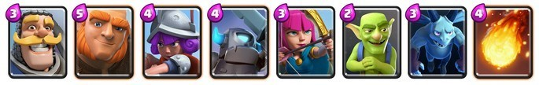Deck 2
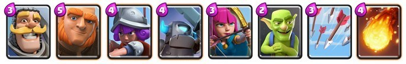Deck 3
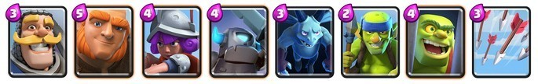The Knight, Giant, Musketeer and Mini P.E.K.K.A. are in every deck for a reason:
they are the best cards for Arena 1.
Your performance will be very good if you use these cards in your deck well.
Even so, it is important to also have some spell cards
such as Arrows and Fireball for aerial support.
Don't forget to take advantage of cards with various units like Goblins and Archers.
Arena 2: Pit of Bones
Deck 1
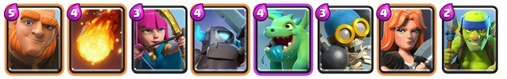If you include the Valkyrie, Bomber and Baby Dragon cards, you will probably do well in Arena 2.
Make some variations on the cards and improve your deck according to your strategies.
Anyway, of the Arena 1 cards, it is recommended to focus on leveling
the Giant, Mini P.E.K.K.A. and Fireball.
Seriously, you won't regret it.
Arena 3: Barbarian Tournament
Deck 1
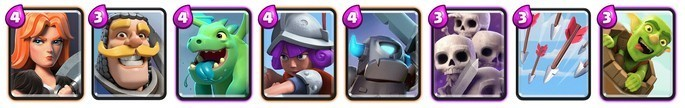Deck 2
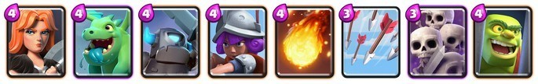Deck 3
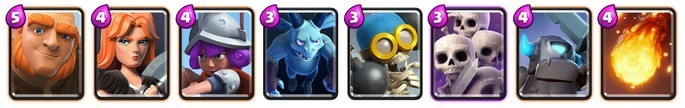
For decks 1 and 2, it's good to improve Valkyrie, Baby Dragon and Mini P.E.K.K.A a lot.
Take a good look at your higher tier cards to choose the ideal deck.
With deck 3 it's the same thing, replacing the Giant with the Baby Dragon.
Generally, the best choice for Arena 3 is to use high-level cards
especially those mentioned above.
Overall, Skeleton Army is a very effective group unit card.
In Arena 3, this card serves to support other stronger cards
defending and preventing enemy units from advancing in your area.
Be sure to include this card in any of your decks!
Arena 4: P.E.K.K.A Playground
Deck 1
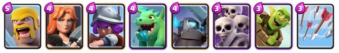Deck 2
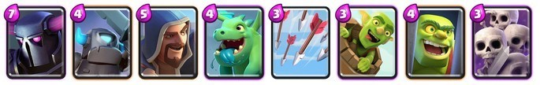
When you reach Arena 4, it's time to use new cards like Barbarians, P.E.K.K.A. and the Mage.
The decks we suggest are new proposals and can do a lot of damage to rivals in this arena
as long as these cards have already been worked on before.
It is important that all the cards in your deck are at a good power level.
Therefore, in some cases, it may be worth continuing to use Arena 3 decks.
Arena 5: Valley of Spells
Deck 1
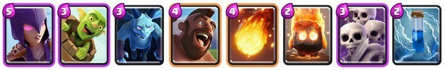
In Arena 5 you will unlock the Witch and the Corridor
key cards to continue advancing between Arenas.
To be used to their full efficiency
it is best to accompany them with the Fire Spirit, Skeleton Army and Servants.
In Arena 5 you can also obtain Zap
being a fundamental card even for the most advanced Arenas.
Don't forget to upload it!
Arena 6: Builder's Workshop
Deck 1
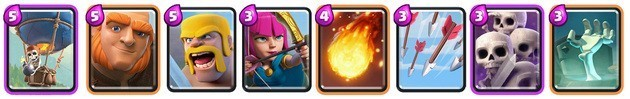Deck 2
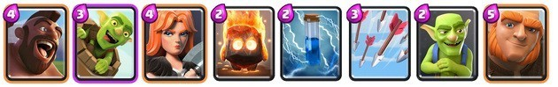Deck 3
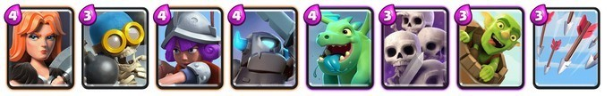
Be a little cautious in Arena 6. The cards you unlock in this Arena are strong
but you need to level them up several times beforehand.
Of all of them, the Balloon is one that can cause a lot of damage in good hands.
The idea of deck 1 (which includes Balloon) is to win by the number of units on the field.
Also use Barbarians, Archers, Skeleton Army and Tombstone to cause a high-quality offensive.
Decks 2 and 3 are also good alternatives.
On the one hand, Corridor, Fire Spirit and Zap are very good cards.
On the other hand, Valkyrie remains one of the essential cards for the first Clash Royale arenas.
Always accompany other strong units. Both the Goblins and the Skeleton Army can give you good support.
Arena 7: Royal Arena
Deck 1
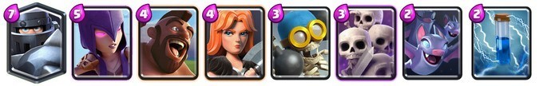Deck 2
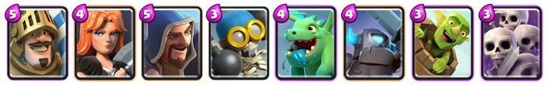
The highlight of Arena 7 is the possibility of unlocking two very good cards: Megaknight and Prince.
Don't be afraid to try different deck variations with these two main cards.
From this Arena onwards, it is recommended that you continue improving some older cards
such as Valkyrie, Corridor and Witch.
Cards at high levels will be decisive between victory and defeat in advanced Arenas.
Arena 8: Frozen Peak Arena
Deck 1
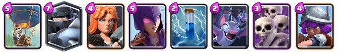Deck 2
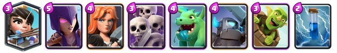Deck 3
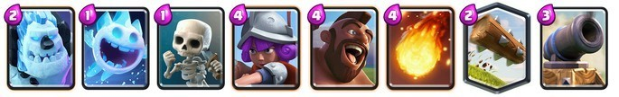
Arena 8 is one of the first big challenges you'll face in Clash Royale.
When you arrive in this Arena, you will have unlocked dozens of different cards.
The possibilities are endless and your rivals will become more and more powerful!
The decks listed are balanced and perform well in most matches.
To use deck 1 effectively, you'll have to set the stage for Mega Knight.
Start with the Skeleton and Bat Army.
After accumulating some elixir, the ideal time has come to send more powerful units.
Deck 2 is similar, but with the Princess as the main card.
Finally, deck 3 is recommended for a defensive strategy.
Therefore, it is important to have the Ice Golem, Ice Spirit, Log and Cannon at high levels to battle.
Using the links on the opposite side we obtain knowledge regarding:
1º: Most effective decks present in each arena
2º: Simple ways to obtain resources for rapid evolution in the game
3º: Most relevant offers and tournaments that generate efficient rewards
4º: Tips based on the opinions of current professional players for rapid evolution
-----------------------------------------------------------------------------------------------------------